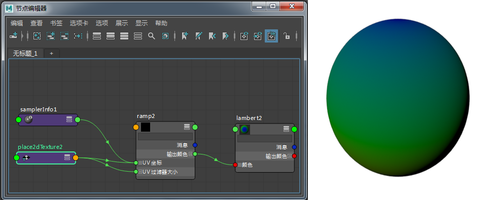
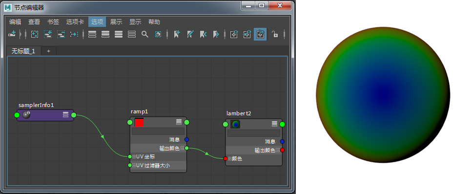

易于使用的着色器标记为粗体。
不接受数组输入或不提供多输出的更复杂的着色器标记为斜体。
请注意，我们没有针对使用噪波函数的程序纹理提供一对一匹配的 Maya 着色器，因为 Maya 的噪波函数使用特定的随机表。
| 各向异性 | 是 |
| Blinn | 是（基本转换为标准曲面着色器） |
| Phong | 是（基本转换为标准曲面着色器） |
| 分层着色器 | 是（仅限 16 个条目) |
| 海洋着色器 | 否 |
| 渐变着色器 | 否 |
| 使用背景 | 否 |
| Lambert | 是 |
| 曲面着色器 | 是 |
| name | 已完成 | 数组输入 | 多输出 |
| 凸起 | 是 | 否 | 否 |
| 棋盘格 | 是 | 否 | 否 |
| 布料 | 是 | 否 | 否 |
| 文件 | 是 | 否 | 否 |
| 流体 2D | 是 | 是（color、controlPoints、...） | 是（outUV、outGrid） |
| 分形 | 是 | 否 | 否 |
| 栅格 | 是 | 否 | 否 |
| 山脉 | 是 | 是 | 是 |
| 噪波 | 是 | 否 | 否 |
| 渐变 | 是（仅限 16 个条目) | 是 | 否 |
| 水 | 是 | 是 | 是 |
| 分层纹理 | 是（仅限 16 个条目) | 是（输入） | 否 |
| name | 已完成 | 数组输入 | 多输出 |
| 布朗 | 是 | 否 | 否 |
| 云 | 是 | 否 | 否 |
| 凹陷 | 是 | 是 | 是 |
| 流体 3D | 否 | 是（color、controlPoints、...） | 是（outUV、outGrid） |
| 花岗岩 | 是 | 是 | 是 |
| 皮革 | 是 | 是 | 是 |
| 大理石 | 是 | 否 | 否 |
| 岩石 | 是 | 是 | 是 |
| 雪 | 是 | 否 | 否 |
| 匀值分形 | 是 | 否 | 否 |
| 灰泥 | 是 | 否 | 否 |
| 体积噪波 | 是 | 否 | 否 |
| 木材 | 否 | 否 | 否 |
| name | 已完成 | 数组输入 | 多输出 |
| 环境球体 | 是 | 否 | 否 |
| name | 已完成 | 数组输入 | 多输出 |
| 数组映射器 | 否 | 否 | ? |
| Bump2d | 是 | 否 | 否 |
| Bump3d | 否 | 否 | 否 |
| 条件 | 是 | 否 | 否 |
| 间距 | 否 | 否 | 否 |
| 高度场 | 否 | 是 | ? |
| 灯光信息 | 否 | 否 | 是（pointCamera、lightPosition、lightDirection） |
| MultiplyDivide | 是 | 否 | 否 |
| Place2d | 是（仅支持 outUV） | 否 | 是 |
| Place3d | 是 | 否 | 否？ |
| PlusMinusAverage | 是 | 是（input1D、input2D、input3D） | 是（output1D、output2D、output3D） |
| 投影 | 是 | 否 | 否 |
| 反转 | 是 | 否 | 否 |
| SamplerInfo | 否 | 否 | 是（pointCamera、pointObj、pointWorld、normalCamera、...） |
| SetRange | 是 | 否 | 否 |
| 蒙板 | 否 | 否 | 否 |
| UV 选择器 | 否 | 否 | 是 |
| 向量积 | 否 | 否 | 否 |
| name | 已完成 | 数组输入 | 多输出 |
| 混合(Blend) | 是 | 否 | 否 |
| 区间限定(Clamp) | 是 | 否 | 否 |
| 对比度 | 是 | 否 | 否 |
| GammaCorrect | 是 | 否 | 否 |
| HSV 到 RGB | 是 | 否 | 否 |
| 亮度 | 是 | 否 | 否 |
| 重映射颜色 | 是（不自动转换） | 是 | 否 |
| 重映射 HSV | 是（但无转换器？） | 是 | 否 |
| 重映射值 | 是 | 是 | 是（outValue、outColor） |
| RGB 到 HSV | 是 | 否 | 否 |
| 涂抹 | 否 | ? | ? |
| 曲面亮度 | 否 | 否 | 否 |
下面是使用部分 Maya 着色器节点时的几个解决方法示例。
连接至渐变的 UV 坐标时采样器信息正面比不起作用：

